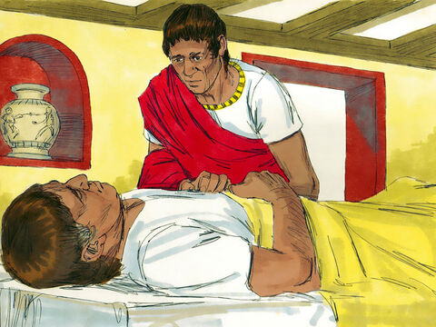
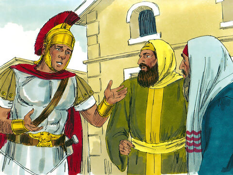
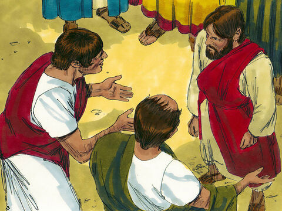
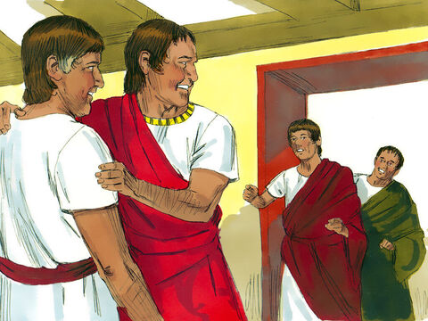

The Faith Of The Centurion
And when Jesus was entered into Capernaum, there came unto him a centurion, beseeching him,
And saying, Lord, my servant lieth at home sick of the palsy, grievously tormented.
And Jesus saith unto him, I will come and heal him.
The centurion answered and said, Lord, I am not worthy that thou shouldest come under my roof: but speak the word only, and my servant shall be healed.
For I am a man under authority, having soldiers under me: and I say to this man, Go, and he goeth; and to another, Come, and he cometh; and to my servant, Do this, and he doeth it.
When Jesus heard it, he marvelled, and said to them that followed, Verily I say unto you, I have not found so great faith, no, not in Israel.
And I say unto you, That many shall come from the east and west, and shall sit down with Abraham, and Isaac, and Jacob, in the kingdom of heaven.
But the children of the kingdom shall be cast out into outer darkness: there shall be weeping and gnashing of teeth.
And Jesus said unto the centurion, Go thy way; and as thou hast believed, so be it done unto thee. And his servant was healed in the selfsame hour.
Matthew 8:5-13
- 
- 
- 

- 